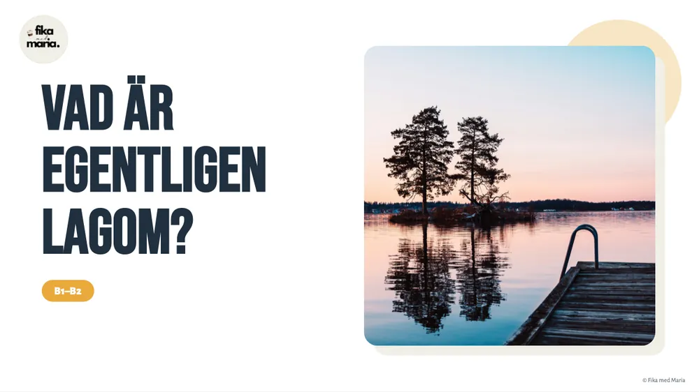

B1–B2Sverige bortom läroboken
Vad är egentligen lagom?
Vad lagom egentligen betyder – ordet som förklarar mycket om den svenska karaktären. Du läser ordets historia, reder ut var ”lagom” är på sin plats och tar tillsammans fram råd till en nykomling: hur man är lagom på jobbet, bland grannarna eller på en fest.
4 PDF · Canva · MiroFråga om lektionen